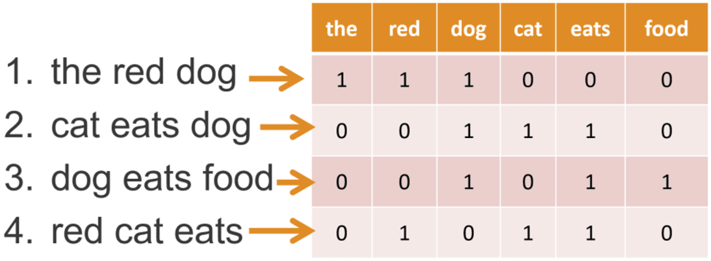
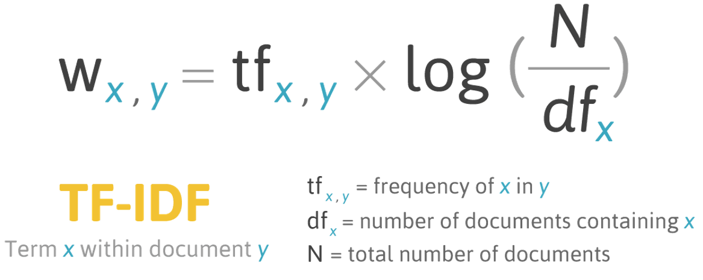
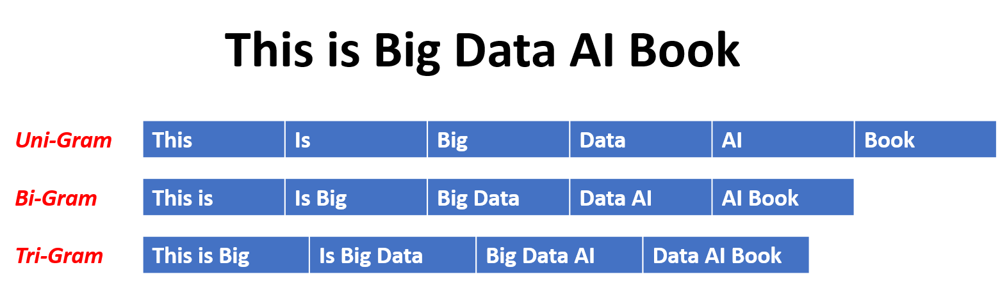
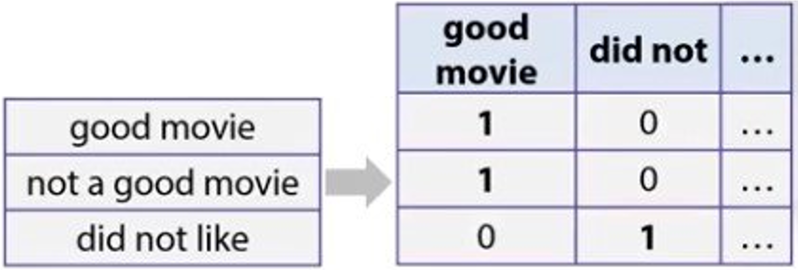

Introduction to Natural Language Processing (NLP)#
import pandas as pd
from sklearn.model_selection import train_test_split
import string
from nltk.tokenize import word_tokenize
from nltk.corpus import stopwords
from nltk.stem.porter import PorterStemmer
from nltk.stem import WordNetLemmatizer
from sklearn.feature_extraction.text import CountVectorizer, TfidfVectorizer
Terminology#
Language model คือ model ที่พยายามทำนายตัวอักษรหรือคำถัดไปจาก input text
Sentiment analysis คือ การวิเคราะห์อารมณ์ความรู้สึกจาก text
Authorship attribution คือ การวิเคราะห์ writing style เพื่อระบุ author
Text preprocessing#
Natural Language Processing (NLP) ใช้ nltk module
Text preprocessing มีขั้นตอนดังนี้
ทำ text ให้เป็นตัวพิมพ์เล็กให้หมด
เอาเลขออก
เอา punctuation ออก
ทำ tokenizing (แยก text ออกเป็น list ของ word (token)) หากต้องการวิเคราะห์แต่ละคำ
ทำได้โดยใช้
nltk.tokenize.word_tokenize
เอา stopword (คำที่ใช้บ่อย แต่ไม่มี information มาก เช่น verb to be, pronouns) ออก
ดูคำที่เป็น stopwords (ที่เป็นภาษาอังกฤษ) ทั้งหมดโดยใช้
nltk.corpus.stopwords.words('english')
ทำ stemming & lemmatizing (แปลงแต่ละคำให้เป็นรากของมัน เพื่อรวมคำที่มีความหมายเดียวกันเข้าด้วยกัน)
Stemming เป็นการแปลงเป็นรากศัพท์ เช่น changing \(\rightarrow\) chang ทำได้โดยใช้
nltk.stem.porter.PorterStemmerLemmatizing เป็นการแปลงเป็นศัพท์พื้นฐานที่มีความหมาย เช่น changing \(\rightarrow\) change ทำได้โดยใช้
nltk.stem.WordNetLemmatizer
Note
แต่ละ task (เช่น topic modelling, sentiment analysis, authorship attribution, text generation) ต้องใช้ step เหล่านี้ต่างกัน บาง step อาจไม่ต้องทำ
เลขสามารถใช้หา date ได้
punctuation ใช้วิเคราะห์ writing style ได้ อย่างไรก็ตาม text ใน social media การใช้ punctuation ไม่เป็นไปตามหลักการ เอาออกดีกว่าถ้าไม่ consistent
data = pd.read_csv('../data/twitter_sentiment_data.csv')
data
| sentiment | message | tweetid | |
|---|---|---|---|
| 0 | 1 | RT @7im: Aaaand @ScottWalker just eliminated a... | 814547316258512896 |
| 1 | 0 | RT @annelongfield: Know any budding young clim... | 955607502699290625 |
| 2 | -1 | @SenSanders Mainly because climate change has ... | 959276999603716101 |
| 3 | 1 | RT @StephenSchlegel: she's thinking about how ... | 798860441870970883 |
| 4 | 1 | willingly sacrificing common courtesy in order... | 953371679799070721 |
| ... | ... | ... | ... |
| 8784 | 0 | @BarackObama @capitalweather Gary Johnson: For... | 779353621427138560 |
| 8785 | 1 | So fucking mad, climate change isn't something... | 796529677829623808 |
| 8786 | 0 | RT @moklick: NASA created a page about climate... | 842032360124227584 |
| 8787 | 1 | RT @SenSanders: We have a president-elect who ... | 797897893243822080 |
| 8788 | 0 | @KMOV Man, this global warming is really getti... | 955793233879162881 |
8789 rows × 3 columns
# Drop duplicates and NAs
data = data.drop_duplicates().dropna()
# Feature (X) and target (y)
X = data["message"]
y = data["sentiment"]
# Train-test split
X_train, X_test, y_train, y_test = train_test_split(X, y, train_size=.7, random_state=42)
class text_preprocessor:
def __init__(self, text):
self.text = text
def lower(self):
self.text = self.text.lower()
def remove_numbers(self):
self.text = ''.join(word for word in self.text if not word.isdigit())
def remove_punctuation(self):
for punctuation in string.punctuation:
self.text = self.text.replace(punctuation, '')
def tokenize(self):
word_tokens = word_tokenize(self.text)
return word_tokens
def remove_stopwords(self, word_tokens):
stop_words = set(stopwords.words('english'))
word_tokens = [w for w in word_tokens if not w in stop_words]
return word_tokens
def stem(self, word_tokens):
word_tokens = [PorterStemmer().stem(word) for word in word_tokens]
return word_tokens
def lemmatize(self, word_tokens):
word_tokens = [WordNetLemmatizer().lemmatize(word) for word in word_tokens]
return word_tokens
def transform(self, to_string=True):
self.lower()
self.remove_numbers()
self.remove_punctuation()
word_tokens = self.tokenize()
word_tokens = self.remove_stopwords(word_tokens)
word_tokens = self.lemmatize(word_tokens)
if to_string:
return ' '.join(word_tokens)
else:
return word_tokens
# Show the result of each preprocessing step
text = X_train.iloc[2500]
preprocessor = text_preprocessor(text)
print("0. Original:\n", preprocessor.text, "\n")
preprocessor.lower()
print("1. Lower:\n", preprocessor.text, "\n")
preprocessor.remove_numbers()
print("2. Remove numbers:\n", preprocessor.text, "\n")
preprocessor.remove_punctuation()
print("3. Remove punctuation:\n", preprocessor.text, "\n")
word_tokens = preprocessor.tokenize()
print("4. Tokenize:\n", word_tokens, "\n")
word_tokens = preprocessor.remove_stopwords(word_tokens)
print("5. Tokenize:\n", word_tokens, "\n")
stemmed_word_tokens = preprocessor.stem(word_tokens)
print("6. Stem:\n", stemmed_word_tokens, "\n")
lemmatized_word_tokens = preprocessor.lemmatize(word_tokens)
print("6. Lemmatize:\n", lemmatized_word_tokens, "\n")
0. Original:
RT @Mathius38: Anyone who thinks today's rate of climate change is unprecedented REALLY needs to read this: @tan123 @EcoSenseNow…
1. Lower:
rt @mathius38: anyone who thinks today's rate of climate change is unprecedented really needs to read this: @tan123 @ecosensenow…
2. Remove numbers:
rt @mathius: anyone who thinks today's rate of climate change is unprecedented really needs to read this: @tan @ecosensenow…
3. Remove punctuation:
rt mathius anyone who thinks todays rate of climate change is unprecedented really needs to read this tan ecosensenow…
4. Tokenize:
['rt', 'mathius', 'anyone', 'who', 'thinks', 'todays', 'rate', 'of', 'climate', 'change', 'is', 'unprecedented', 'really', 'needs', 'to', 'read', 'this', 'tan', 'ecosensenow…']
5. Tokenize:
['rt', 'mathius', 'anyone', 'thinks', 'todays', 'rate', 'climate', 'change', 'unprecedented', 'really', 'needs', 'read', 'tan', 'ecosensenow…']
6. Stem:
['rt', 'mathiu', 'anyon', 'think', 'today', 'rate', 'climat', 'chang', 'unpreced', 'realli', 'need', 'read', 'tan', 'ecosensenow…']
6. Lemmatize:
['rt', 'mathius', 'anyone', 'think', 'today', 'rate', 'climate', 'change', 'unprecedented', 'really', 'need', 'read', 'tan', 'ecosensenow…']
def preprocess_text_data(X, to_string=True):
X_preprocessed = X.copy()
for idx, txt in X_preprocessed.items():
X_preprocessed.loc[idx] = text_preprocessor(txt).transform(to_string=to_string)
return X_preprocessed
# Preprocess training texts (get preprocessed tokens)
preprocess_text_data(X_train, to_string=False)
4028 [rt, kamalaharris, stand, jerrybrowngov, sayin...
6775 [wait, sec, claim, climate, change, real, caus...
7017 [rt, thomastro, much, snow, look, like, cream,...
5527 [rt, ryanmaue, clear, last, year, global, trop...
4936 [finally, paris, climate, change, agreement, d...
...
5741 [obama, ocean, key, protecting, planet, climat...
5198 [rt, aquanaut, robot, shellfish, tell, u, clim...
5397 [rt, kateauty, ocean, heatwave, destroys, tasm...
861 [jonosuchinsky, essay, challenge, everything, ...
7280 [question, u, like, smoking, weed, hate, payin...
Name: message, Length: 6145, dtype: object
# Preprocess training texts (get preprocessed texts)
preprocess_text_data(X_train, to_string=True)
4028 rt kamalaharris stand jerrybrowngov saying cal...
6775 wait sec claim climate change real caused anyt...
7017 rt thomastro much snow look like cream let ’ t...
5527 rt ryanmaue clear last year global tropical st...
4936 finally paris climate change agreement designe...
...
5741 obama ocean key protecting planet climate change
5198 rt aquanaut robot shellfish tell u climate cha...
5397 rt kateauty ocean heatwave destroys tasmania u...
861 jonosuchinsky essay challenge everything think...
7280 question u like smoking weed hate paying tax t...
Name: message, Length: 6145, dtype: object
# Proprocess training and test texts (get preprocessed texts)
X_train_preprocessed = preprocess_text_data(X_train, to_string=True)
X_test_preprocessed = preprocess_text_data(X_test, to_string=True)
Text vectorizing (embedding)#
Three standard vectorizing techniques used with classical (non neural-network) machine learning approaches are:
Bag-of-words representation#
แต่ละประโยคถูกแปลงเป็น vector ที่บันทึกจำนวนคำของแต่ละคำ ใช้ sklearn.feature_extraction.text.CountVectorizer

ข้อจำกัด เช่น
ไม่ได้คำนึงถึงความยาว
ไม่เก็บ context
มี dimensionality เยอะมาก
ต้องใช้ทุกคำที่มีใน dataset
def vectorize(texts, vectorizer):
text_vectors = vectorizer.fit_transform(texts)
return pd.DataFrame(
text_vectors.toarray(), columns=vectorizer.get_feature_names_out()
).set_index(texts)
# Perform bag-of-word vectorising on the first 5 texts
vectorize(X_train_preprocessed[:5], CountVectorizer())
| agreement | amp | anything | back | bad | balance | buying | california | caused | change | ... | snow | stand | storm | tackle | thomastro | tropical | trump | unfccc | wait | year | |
|---|---|---|---|---|---|---|---|---|---|---|---|---|---|---|---|---|---|---|---|---|---|
| message | |||||||||||||||||||||
| rt kamalaharris stand jerrybrowngov saying california back climate change | 0 | 0 | 0 | 1 | 0 | 0 | 0 | 1 | 0 | 1 | ... | 0 | 1 | 0 | 0 | 0 | 0 | 0 | 0 | 0 | 0 |
| wait sec claim climate change real caused anything make look bad | 0 | 0 | 1 | 0 | 1 | 0 | 0 | 0 | 1 | 1 | ... | 0 | 0 | 0 | 0 | 0 | 0 | 0 | 0 | 1 | 0 |
| rt thomastro much snow look like cream let ’ tackle climate change safeguard nature ’ balance sdgs unfccc… | 0 | 0 | 0 | 0 | 0 | 1 | 0 | 0 | 0 | 1 | ... | 1 | 0 | 0 | 1 | 1 | 0 | 0 | 1 | 0 | 0 |
| rt ryanmaue clear last year global tropical storm amp hurricane count possible climate change signal h… | 0 | 1 | 0 | 0 | 0 | 0 | 0 | 0 | 0 | 1 | ... | 0 | 0 | 1 | 0 | 0 | 1 | 0 | 0 | 0 | 1 |
| finally paris climate change agreement designed crook trump buying crap | 1 | 0 | 0 | 0 | 0 | 0 | 1 | 0 | 0 | 1 | ... | 0 | 0 | 0 | 0 | 0 | 0 | 1 | 0 | 0 | 0 |
5 rows × 50 columns
Tf-Idf representation#
แต่ละประโยคถูกแปลงเป็น vector ที่บันทึกคะแนนตามความสำคัญของคำนั้น ใช้ sklearn.feature_extraction.text.TfidfVectorizer

ข้อดี คือ
ใช้ความถี่แทนจำนวนคำ (จึง robust to document length)
วัดความสำคัญของแต่ละคำ
ข้อเสีย คือ
ไม่เก็บ context
มี dimensionality เยอะมาก
# Perform tf-idf vectorising on the first 5 texts
vectorize(X_train_preprocessed[:5], TfidfVectorizer())
| agreement | amp | anything | back | bad | balance | buying | california | caused | change | ... | snow | stand | storm | tackle | thomastro | tropical | trump | unfccc | wait | year | |
|---|---|---|---|---|---|---|---|---|---|---|---|---|---|---|---|---|---|---|---|---|---|
| message | |||||||||||||||||||||
| rt kamalaharris stand jerrybrowngov saying california back climate change | 0.000000 | 0.000000 | 0.000000 | 0.380621 | 0.000000 | 0.000000 | 0.000000 | 0.380621 | 0.000000 | 0.181368 | ... | 0.000000 | 0.380621 | 0.000000 | 0.000000 | 0.000000 | 0.000000 | 0.000000 | 0.000000 | 0.000000 | 0.000000 |
| wait sec claim climate change real caused anything make look bad | 0.000000 | 0.000000 | 0.331405 | 0.000000 | 0.331405 | 0.000000 | 0.000000 | 0.000000 | 0.331405 | 0.157916 | ... | 0.000000 | 0.000000 | 0.000000 | 0.000000 | 0.000000 | 0.000000 | 0.000000 | 0.000000 | 0.331405 | 0.000000 |
| rt thomastro much snow look like cream let ’ tackle climate change safeguard nature ’ balance sdgs unfccc… | 0.000000 | 0.000000 | 0.000000 | 0.000000 | 0.000000 | 0.271627 | 0.000000 | 0.000000 | 0.000000 | 0.129432 | ... | 0.271627 | 0.000000 | 0.000000 | 0.271627 | 0.271627 | 0.000000 | 0.000000 | 0.271627 | 0.000000 | 0.000000 |
| rt ryanmaue clear last year global tropical storm amp hurricane count possible climate change signal h… | 0.000000 | 0.278395 | 0.000000 | 0.000000 | 0.000000 | 0.000000 | 0.000000 | 0.000000 | 0.000000 | 0.132657 | ... | 0.000000 | 0.000000 | 0.278395 | 0.000000 | 0.000000 | 0.278395 | 0.000000 | 0.000000 | 0.000000 | 0.278395 |
| finally paris climate change agreement designed crook trump buying crap | 0.343927 | 0.000000 | 0.000000 | 0.000000 | 0.000000 | 0.000000 | 0.343927 | 0.000000 | 0.000000 | 0.163883 | ... | 0.000000 | 0.000000 | 0.000000 | 0.000000 | 0.000000 | 0.000000 | 0.343927 | 0.000000 | 0.000000 | 0.000000 |
5 rows × 50 columns
N-Gram representation#
แต่ละประโยคถูกแปลงเป็น vector ที่บันทึกจำนวนชุดของ N คำที่อยู่ติดกัน ใช้ sklearn.feature_extraction.text.TfidfVectorizer และต้องกำหนดค่าของ ngram_range parameter ซึ่งเป็น tuple ที่มีสมาชิก 2 ตัว เป็นค่า N ที่น้อยที่สุด กับค่า N ที่มากที่สุด
N = 1 \(\rightarrow\) uni-gram representation
N = 2 \(\rightarrow\) bi-gram representation
N = 3 \(\rightarrow\) tri-gram representation

ข้อดี คือ
เก็บ context
ใช้ความถี่แทนจำนวนคำ จึง robust to document length
ข้อเสีย คือ
ต้องใช้ training data เยอะมาก
ใช้ model ที่สามารถรับมือกับความซับซ้อนที่จะเกิดขึ้นได้

# Perform N-gram vectorising on the first 5 texts
vectorize(X_train_preprocessed[:5], TfidfVectorizer(ngram_range=(1, 2))) # N มีค่าระหว่าง 1 กับ 2
| agreement | agreement designed | amp | amp hurricane | anything | anything make | back | back climate | bad | balance | ... | thomastro much | tropical | tropical storm | trump | trump buying | unfccc | wait | wait sec | year | year global | |
|---|---|---|---|---|---|---|---|---|---|---|---|---|---|---|---|---|---|---|---|---|---|
| message | |||||||||||||||||||||
| rt kamalaharris stand jerrybrowngov saying california back climate change | 0.000000 | 0.000000 | 0.000000 | 0.000000 | 0.000000 | 0.000000 | 0.266032 | 0.266032 | 0.000000 | 0.000000 | ... | 0.000000 | 0.000000 | 0.000000 | 0.000000 | 0.000000 | 0.000000 | 0.000000 | 0.000000 | 0.000000 | 0.000000 |
| wait sec claim climate change real caused anything make look bad | 0.000000 | 0.000000 | 0.000000 | 0.000000 | 0.233558 | 0.233558 | 0.000000 | 0.000000 | 0.233558 | 0.000000 | ... | 0.000000 | 0.000000 | 0.000000 | 0.000000 | 0.000000 | 0.000000 | 0.233558 | 0.233558 | 0.000000 | 0.000000 |
| rt thomastro much snow look like cream let ’ tackle climate change safeguard nature ’ balance sdgs unfccc… | 0.000000 | 0.000000 | 0.000000 | 0.000000 | 0.000000 | 0.000000 | 0.000000 | 0.000000 | 0.000000 | 0.189727 | ... | 0.189727 | 0.000000 | 0.000000 | 0.000000 | 0.000000 | 0.189727 | 0.000000 | 0.000000 | 0.000000 | 0.000000 |
| rt ryanmaue clear last year global tropical storm amp hurricane count possible climate change signal h… | 0.000000 | 0.000000 | 0.195629 | 0.195629 | 0.000000 | 0.000000 | 0.000000 | 0.000000 | 0.000000 | 0.000000 | ... | 0.000000 | 0.195629 | 0.195629 | 0.000000 | 0.000000 | 0.000000 | 0.000000 | 0.000000 | 0.195629 | 0.195629 |
| finally paris climate change agreement designed crook trump buying crap | 0.244842 | 0.244842 | 0.000000 | 0.000000 | 0.000000 | 0.000000 | 0.000000 | 0.000000 | 0.000000 | 0.000000 | ... | 0.000000 | 0.000000 | 0.000000 | 0.244842 | 0.244842 | 0.000000 | 0.000000 | 0.000000 | 0.000000 | 0.000000 |
5 rows × 102 columns
Important parameters#
Parameter ที่สำคัญของ CountVectorizer() และ TfidfVectorizer() เช่น
max_dfกำหนด threshold frequency (ไม่สนใจคำที่มีความถี่สูงกว่าค่านี้)min_dfกำหนด threshold frequency (ไม่สนใจคำที่มีความถี่ต่ำกว่าค่านี้)max_featuresกำหนดจำนวน top feature ที่มากที่สุดที่จะเก็บเอาไว้
# Perform tf-idf vectorising on the first 5 texts with min_df=0.4
vectorize(X_train_preprocessed[:5], TfidfVectorizer(min_df=0.4))
| change | climate | look | rt | |
|---|---|---|---|---|
| message | ||||
| rt kamalaharris stand jerrybrowngov saying california back climate change | 0.501549 | 0.501549 | 0.000000 | 0.704909 |
| wait sec claim climate change real caused anything make look bad | 0.453295 | 0.453295 | 0.767495 | 0.000000 |
| rt thomastro much snow look like cream let ’ tackle climate change safeguard nature ’ balance sdgs unfccc… | 0.382301 | 0.382301 | 0.647293 | 0.537311 |
| rt ryanmaue clear last year global tropical storm amp hurricane count possible climate change signal h… | 0.501549 | 0.501549 | 0.000000 | 0.704909 |
| finally paris climate change agreement designed crook trump buying crap | 0.707107 | 0.707107 | 0.000000 | 0.000000 |
# Perform tf-idf vectorising on the first 5 texts (retain top 10 features)
vectorize(X_train_preprocessed[:5], TfidfVectorizer(max_features=10))
| change | climate | look | much | nature | paris | possible | real | rt | thomastro | |
|---|---|---|---|---|---|---|---|---|---|---|
| message | ||||||||||
| rt kamalaharris stand jerrybrowngov saying california back climate change | 0.501549 | 0.501549 | 0.000000 | 0.000000 | 0.000000 | 0.000000 | 0.000000 | 0.00000 | 0.704909 | 0.000000 |
| wait sec claim climate change real caused anything make look bad | 0.328427 | 0.328427 | 0.556075 | 0.000000 | 0.000000 | 0.000000 | 0.000000 | 0.68924 | 0.000000 | 0.000000 |
| rt thomastro much snow look like cream let ’ tackle climate change safeguard nature ’ balance sdgs unfccc… | 0.223302 | 0.223302 | 0.378083 | 0.468625 | 0.468625 | 0.000000 | 0.000000 | 0.00000 | 0.313843 | 0.468625 |
| rt ryanmaue clear last year global tropical storm amp hurricane count possible climate change signal h… | 0.345454 | 0.345454 | 0.000000 | 0.000000 | 0.000000 | 0.000000 | 0.724975 | 0.00000 | 0.485524 | 0.000000 |
| finally paris climate change agreement designed crook trump buying crap | 0.395156 | 0.395156 | 0.000000 | 0.000000 | 0.000000 | 0.829279 | 0.000000 | 0.00000 | 0.000000 | 0.000000 |